Manual de usuario · v9.0 · con capturas de pantalla
Manual de Casos de Uso
Aplicación de terapia auditivo‑verbal y del lenguaje para niñas y niños con hipoacusia, implante coclear, dislalias, dislexia, TEA o dificultades del lenguaje.
Guía para logopedas, familias y cuidadores
Julio de 2026 · Documento interno
Expo SDK 54 / React Native · Castellano · Galego · Dominicano · Euskera · Voz neuronal offline
Contenido
Índice
Introducción
1Introducción a Valeria+
2Roles y modos de acceso
3Mapa de pantallas y glosario
Casos de uso
CU‑01Alta de un nuevo paciente
CU‑02Elegir un bloque de terapia (hub de bloques)
CU‑03Academy: formarse con las Cápsulas de Conocimiento
CU‑04Pares Mínimos para dislalias
CU‑05Expansión Semántica / progresión léxica
CU‑06Prescribir terapias (Audición, Lenguaje, TEA y Dislexia · Modo Profesional)
CU‑07Retomar un paciente e iniciar sesión
CU‑08Test de Ling previo (audífono / implante)
CU‑09Realizar una sesión de ejercicios
CU‑10Configurar recordatorios diarios
CU‑11Motivación: racha, niveles e insignias
CU‑12Consultar el panel de resultados
CU‑13Cambiar entre Modo Familia y Modo Profesional
CU‑14Exportar la evidencia de usabilidad del piloto (QR + compartir)
CU‑15Elegir la variedad de terapia (Castellano · Galego · Dominicano · Euskera)
CU‑16Panel del Adulto: carga comunicativa (ruido, doble tarea, quiebre)
Anexo
APreguntas frecuentes y resolución de problemas
Capítulo 1
Introducción a Valeria+
Valeria+ es una aplicación móvil (Expo SDK 54 / React Native) diseñada para acompañar las
sesiones de terapia auditivo‑verbal y del lenguaje de niñas y niños. Reúne en un solo lugar el
registro del paciente, una comprobación auditiva previa (Test de Ling), seis bloques de terapia, un espacio de
formación para el cuidador (Academy) y un panel de resultados para seguir la evolución.
La app parte de un principio clave: los padres y cuidadores son el motor de voz y evaluación.
En los bloques con micrófono, el reconocimiento de voz ayuda, pero el adulto siempre es el juez final:
puede corregir el veredicto con un toque. Y donde no hay micrófono (Expo Go, navegador web), el adulto valora la
respuesta con botones. Así la terapia funciona en cualquier dispositivo y refuerza el vínculo familiar.
A quién va dirigida
Logopedas y profesionales de audición/lenguaje (que prescriben y supervisan) y
familias o cuidadores (que realizan las sesiones en casa). Este manual cubre a ambos perfiles.
Los seis bloques de terapia
Desde la pantalla Prescripción de Terapias se elige uno de estos bloques. Los dos primeros
se incorporaron en la versión 5, la versión 6 amplió su contenido y la versión 9 sumó los bloques de
TEA y Dislexia.
Bloque
Para qué sirve
🗣️ Pares Mínimos
Dislalias fonológicas. 15 pares de palabras casi iguales (rana/lana) en 6 grupos —rotacismo, sigmatismo, velares, labiodental, nasales y laterales— con juego de voz, misión física y sello doble padre‑hijo.
🧩 Expansión Semántica
Progresión léxica para intervención temprana: 5 escenarios diarios, 9 progresiones (onomatopeya → adjetivo) y 8 cápsulas de contraste, uniendo imagen, voz y acción física.
👂 Audición — 18 terapias
Protocolo ACOPROS: fonética‑fonología, semántica, morfosintaxis, pragmática y escucha en ruido (RA‑1…RA‑5) para pacientes con audífono, implante coclear o hipoacusia.
Protocolo PRT + TCC para el espectro autista: atención conjunta triangulada, quiebre pragmático (con consentimiento), espejo asimétrico, transición interrumpida, categorización bajo ruido y múltiples señales. Todos los estresores son manuales (Panel del Adulto).
📖 Dislexia — 6 terapias
Fonología y acceso léxico: intruso fonológico, rastreo léxico con interferencia, síntesis fonémica rítmica, criba de pseudopalabras, rastreo visual de rotaciones (b/d · p/q) y denominación rápida (RAN).
Además, el Test de Ling es una comprobación auditiva rápida (6 sonidos) previa a los
ejercicios de audición; Academy forma al cuidador (ver CU‑03), y la gamificación
(XP, racha, niveles e insignias) mantiene la motivación en todos los bloques.
Novedades de la versión 6
La versión 6 pule la experiencia de las sesiones y prepara la app para pruebas con profesionales:
Novedad
Qué aporta
🔊 Voz más humana
El motor prioriza voces neuronales/enhanced (Google neural/WaveNet, iOS Enhanced/Siri) y descarta las metálicas. Añade prosodia natural (pausas por frase, entonación en preguntas y exclamaciones) y frases de ánimo rotativas.
🔄 Rondas variadas
Cada mini‑juego de Audición y Lenguaje rota hasta 3 contenidos distintos con el botón “🔄 Otra ronda”, siguiendo un flujo numerado PASO 1→4 (consigna → juego → movimiento → evaluación).
🎯 Sesión completa
Botón por bloque que encadena todos los ejercicios prescritos en una sola sesión (pasando por el Test de Ling si procede), en vez de practicar de uno en uno.
🧭 Fase de turno visible
Pares Mínimos y Expansión Semántica muestran la barra Escucha → Repite → Veredicto → Misión, con consignas rotativas y doble vuelta evaluada (objetivo + opuesta).
🖼️ Fichas sin imágenes rotas
Pictogramas SVG de alto contraste para las palabras cuyos emojis se ven como cuadros vacíos o de bajo contraste en muchos Android, con emoji de reserva.
☁️ Sincronización opcional
Acceso profesional con correo y contraseña (Firebase Authentication) y copia de pacientes/sesiones en la nube (Cloud Firestore). Es aditivo: la app sigue funcionando en local sin conexión.
Novedades de la versión 7
La versión 7 prepara la app para el piloto clínico: recoge evidencia de usabilidad
de forma anónima, sin conexión y sin fricción para las familias, y añade una salida
para que el logopeda la exporte. Nada de esto interfiere con la sesión: la captura no bloquea las
animaciones ni el audio.
Novedad
Qué aporta
📊 Telemetría de usabilidad
Mide, sin molestar, tres señales por sesión: tiempo en cada pantalla, toques fuera de zona útil (misclicks) y la proporción de cápsulas de movimiento que se saltan. Son datos anónimos, sin nombres, sin audio y sin el contenido de las respuestas.
💬 Encuesta rápida (SUS)
Una única pregunta de satisfacción de 1 a 5 con caritas, centrada en la facilidad para integrar el ejercicio en la rutina del niño/a. Aparece solo en un hito grande (completar 4 bloques distintos) y como mucho una vez por semana, para no cansar.
🔒 Guardado cifrado y purga
Telemetría y encuesta se guardan juntas (mismo identificador de sesión) en un archivo cifrado en el dispositivo, que solo se vacía tras una exportación correcta para no acumular datos semana a semana.
📤 Exportación dual
Con el PIN profesional, la app genera a la vez un código QR con el resumen (offline, escaneable) y abre el menú de compartir para enviar el registro completo por email o WhatsApp cuando haya conexión (ver CU‑14).
Novedades de la versión 8
La versión 8 abre Valeria+ a más lenguas y variedades del habla y suma un paradigma
de carga comunicativa controlada para el piloto. El contenido terapéutico (lo que se
locuta, se muestra y se evalúa) puede sonar en tres variedades; la interfaz sigue en castellano.
Novedad
Qué aporta
🌍 Tres variedades
El contenido se locuta y evalúa en Castellano, Galego (Proxecto Nós) o Dominicano (es‑DO, Quisqueya Habla), elegibles en la tarjeta “Voz de la app” (ver CU‑15). Cada variedad usa su propio banco de pares mínimos.
🔊 Voz neuronal offline
Castellano y gallego suenan con voces neuronales pregeneradas (Sharvard y Celtia) empaquetadas en la app: locución natural sin conexión ni servidor. Lo no cubierto recae con suavidad en la voz del sistema.
🇩🇴 Respeto dialectal
En dominicano la app no marca como error los rasgos normales del habla caribeña (seseo, aspiración de la “s”, cambio de “r/l” a final de sílaba): evita falsos positivos que estigmaticen el habla de la familia.
🎛️ Panel del Adulto · Carga Comunicativa
Tres módulos manuales para el piloto (escucha en ruido, oso distractor de doble tarea y quiebre pragmático). Los activa siempre el adulto: la app nunca ajusta nada sola (ver CU‑16).
💬 Frases portadoras
En Pares Mínimos la palabra objetivo ya no se dicta aislada: se incrusta en una frase con entonación natural seguida de una pregunta, sin repetirse en diez ensayos seguidos.
Novedades de la versión 8.1
La versión 8.1 pule tres puntos detectados en el uso real tras el registro del paciente:
Mejora
Qué cambia
🔘 Botón de reingreso más visible
En Bienvenida, “Ya tengo un paciente registrado” deja de ser un enlace pequeño y pasa a ser un botón de tamaño completo, al nivel de “Comenzar” (ver CU‑07).
🪪 Resultados con el paciente real
La cabecera del panel de resultados y del Test de Ling, y el informe que se comparte, muestran ahora el nombre y NHC de la ficha registrada (antes aparecía un dato de muestra fijo). Si no hay ficha, se indica con un rótulo neutro (ver CU‑08 y CU‑12).
🔊 La voz gallega siempre arranca
En galego, la Expansión Semántica y los ejercicios de Audición y Lenguaje (contenido compartido con el castellano) suenan con la voz neuronal castellana mientras Celtia no los cubra, en vez de quedar en silencio en dispositivos sin voz gallega (ver CU‑15).
Novedades de la versión 8.2
La versión 8.2 suma Academy, un espacio de formación para el adulto.
En la terapia auditivo‑verbal el cuidador es quien dirige cada sesión, así que aprender a hacerlo bien
forma parte del tratamiento. Academy no es para el niño: es para quien lo acompaña.
Novedad
Qué aporta
🎓 Academy
Una tarjeta destacada en la pantalla de terapias abre un curso breve de Cápsulas de Conocimiento (unos 2 minutos cada una) sobre cómo aprenden a hablar los niños, el porqué de las dinámicas de movimiento (TPR) y los vicios a evitar durante la terapia en casa (ver CU‑03).
✅ Quiz rápido
Cada cápsula termina con un mini‑test de una o dos preguntas con respuesta explicada, para fijar la idea sin que se haga pesado.
📊 Progreso visible
La tarjeta muestra una barra de avance, el nivel (de Novato a Cuidador experto), los puntos y las insignias, que se actualizan al instante al completar una cápsula. El avance se guarda cifrado en el dispositivo.
Novedades de la versión 9
La versión 9 amplía el alcance clínico de la app: incorpora dos bloques de terapia nuevos,
amplía los protocolos existentes, suma una cuarta variedad de habla y convierte Academy en un
hub de formación por patología. Todo respeta el mismo principio: el adulto es el juez y los
estresores se activan siempre a mano (muro MDR).
Novedad
Qué aporta
🧠 Bloque TEA
Seis terapias para el espectro autista (PRT + TCC): atención conjunta triangulada, reparación comunicativa, flexibilidad cognitiva, categorización bajo carga sensorial y múltiples señales. Los estresores (ruido, quiebre) los activa el adulto, con consentimiento informado para el quiebre pragmático.
📖 Bloque Dislexia
Seis terapias de conciencia fonológica y acceso léxico: intruso fonológico, rastreo léxico con interferencia, síntesis fonémica rítmica, criba de pseudopalabras, rastreo de rotaciones (b/d · p/q) y denominación rápida (RAN). El “cronómetro” es siempre la persecución dactilar del adulto, nunca un reloj automático.
👂 Audición ampliada
El bloque de Audición pasa de 13 a 18 terapias con la categoría “Escucha en ruido” (RA‑1…RA‑5): figura‑fondo con ruido, lectura labiofacial, formato cerrado degradado, secuencia con espera y localización del sonido. El ruido lo sube y baja el adulto con el deslizador del Panel del Adulto.
🗣️ Pares Mínimos ampliados
El banco castellano pasa de 10 a 15 pares con dos grupos nuevos (nasales y laterales): gota/bota, beso/queso, foca/boca, miel/piel y pato/palo. Los objetivos nuevos entran en el motor de frases portadoras.
🌍 Cuarta variedad: Euskera
El contenido puede locutarse y evaluarse en euskera batua con voz neuronal HiTZ‑TTS pregenerada (UPV/EHU · Aholab, proyecto ILENIA/NEL‑GAITU). El reconocimiento usa eu‑ES y, donde no exista, recae en es‑ES con un pliegue de la ⟨h⟩ muda (ver CU‑15).
🎓 Academy multidominio
Academy deja de ser un curso único y se organiza en cinco dominios (Lenguaje, Hipoacusia, Dislalias, Dislexia y TEA), cada uno con su propia escala de niveles e insignias. Un feed de prioridad destaca el dominio que corresponde a la patología de la ficha (ver CU‑03).
Capítulo 2
Roles y modos de acceso
Valeria+ distingue dos formas de usar la app sobre el mismo dispositivo. El cambio
no requiere cerrar sesión: se controla con un PIN de 4 dígitos del logopeda, compartido por todos
los bloques (componente común de la versión 5).
Modo
Quién
Qué puede hacer
Modo Familia por defecto
Tutor, madre, padre o cuidador
Practicar lo prescrito, realizar las sesiones, activar recordatorios y consultar el progreso. No puede cambiar qué terapias, pares o actividades están activos.
Modo Profesional requiere PIN
Logopeda / profesional
Todo lo anterior más prescribir: activar o desactivar terapias en cada uno de los bloques prescribibles y guardar la selección. Se desbloquea con el PIN y se vuelve a bloquear al guardar.
PIN de demostración
El PIN de ejemplo es 1985. En un despliegue real, el logopeda debe
sustituirlo por uno propio. El PIN nunca se guarda en texto plano: se valida contra un hash SHA‑256 (compatible
con Hermes en Android).
Privacidad de los datos
Toda la información del paciente (ficha, historial de sesiones, evolución por fonema, progreso) se guarda
localmente en el dispositivo mediante almacenamiento cifrado. La app está pensada para cumplir
RGPD/HIPAA en el manejo de datos personales (PII). Sin conexión, la app es plenamente funcional:
no necesita ningún servidor para operar.
Sincronización en la nube (opcional · v6)
Para pruebas con profesionales, la versión 6 añade un acceso profesional con correo
y contraseña (Firebase Authentication) que permite guardar una copia de pacientes y sesiones en la nube
(Cloud Firestore). Es una capa aditiva y opcional: cada profesional autenticado solo accede a sus
propios datos, protegidos por reglas de seguridad. Si no se activa, todo sigue guardándose únicamente en el
dispositivo.
Telemetría de usabilidad del piloto (v7)
Durante el piloto, la app recoge métricas de usabilidad anónimas (tiempo por
pantalla, toques fuera de zona útil y cápsulas de movimiento saltadas) y una encuesta breve de satisfacción. No
incluyen nombres, ni audio, ni el contenido de las respuestas; se guardan cifradas en el dispositivo bajo un
identificador de sesión y se purgan tras exportarlas (ver CU‑14). Al tratarse de un estudio con menores, el
consentimiento informado de las familias se gestiona en el protocolo del piloto, fuera de la app.
Capítulo 3
Mapa de pantallas y glosario
Tras el alta o la selección del paciente se llega al hub de Prescripción,
desde donde se abre cualquiera de los seis bloques (o Academy). El Test de Ling solo precede a los ejercicios de audición
cuando el paciente usa audífono o implante coclear.
Bienvenida→Créditos→Ficha / Selección→Hub de bloques→Pares MínimosExpansión Sem.Audición*LenguajeTEADislexia→Resultados
* Los ejercicios de Audición pasan antes por el Test de Ling si la patología indica audífono o implante.
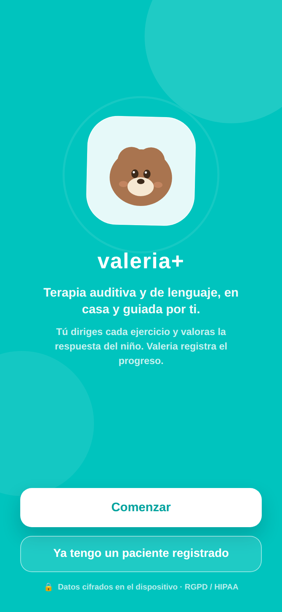
Fig. 1 · Bienvenida: “Comenzar” o “Ya tengo un paciente registrado”.
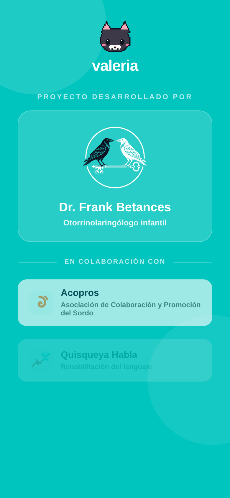
Fig. 2 · Créditos del proyecto y colaboradores.
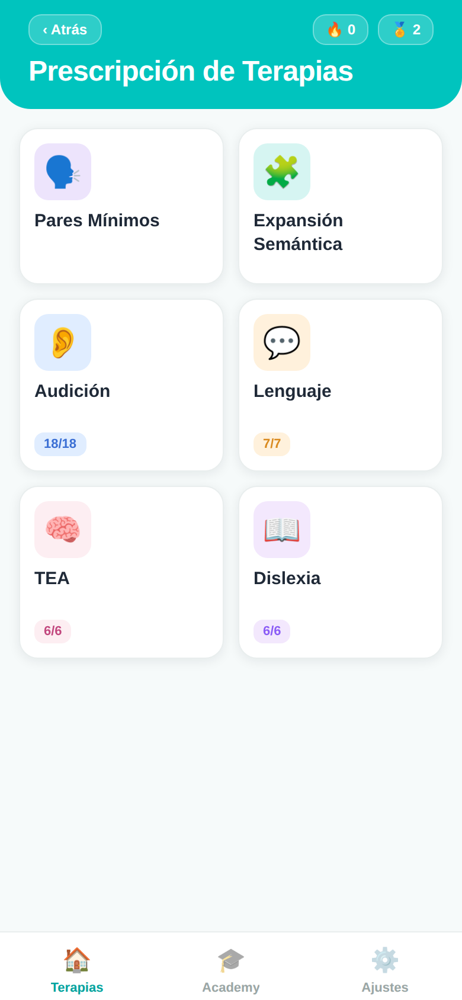
Fig. 3 · Hub de Prescripción: los bloques de terapia y la tarjeta Academy.
Glosario
Término
Significado
Hub de bloques
Pantalla “Prescripción de Terapias”: seis tarjetas (Pares Mínimos, Expansión Semántica, Audición, Lenguaje, TEA y Dislexia) más la tarjeta Academy, desde donde se practica o prescribe.
Par mínimo
Dos palabras que solo se distinguen por un fonema (rana / lana). Sirven para entrenar el contraste que el niño sustituye.
Sustitución
Error fonológico habitual: el niño dice la palabra contraria (r̄ → l). La app la detecta y la corrige.
Sello doble
Mecánica anti‑pasividad: padre e hijo pulsan dos huellas a la vez para avanzar (o mantienen una pulsada 2 s).
TPR
Total Physical Response: aprender una palabra asociándola a una acción física del cuerpo.
Fase de turno
Barra guía de Pares Mínimos y Expansión Semántica que marca en qué momento va el ejercicio: Escucha → Repite → Veredicto → Misión.
Sesión completa
Botón que encadena en una sola sesión todos los ejercicios prescritos de un bloque, en vez de lanzarlos de uno en uno.
Otra ronda
Botón que rota el contenido de un mini‑juego de Audición/Lenguaje (hasta 3 variantes) para que no se memorice el mismo ítem.
Progresión léxica
Secuencia que sube de onomatopeya → sustantivo → verbo → adjetivo sobre un mismo tema (el coche, el perro…).
Test de Ling
Comprobación de 6 sonidos (m, u, a, i, sh, s) que verifica si el niño oye desde graves hasta agudos.
Escala EPT‑3
Valoración unificada de 3 niveles: ★ Emergente · ★★ En proceso · ★★★ Consolidado.
Racha (🔥)
Días consecutivos en los que se ha completado al menos una sesión.
NHC
Número de Historia Clínica del paciente.
Telemetría de usabilidad
Métricas anónimas que la app recoge durante el piloto para medir lo fácil que resulta de usar (tiempo por pantalla, misclicks, abandono de cápsulas). Sin datos personales.
Misclick
Toque en una zona “muerta” de la pantalla, fuera de cualquier botón o elemento útil. Un exceso señala que algo no se entiende o el objetivo es pequeño.
Abandono TPR
Proporción de cápsulas de movimiento (TPR) que se saltan en vez de completarse. Ayuda a saber si las pausas activas encajan en la sesión.
SUS (encuesta)
System Usability Scale adaptada: una pregunta de 1 a 5 sobre la facilidad de uso real. Aparece con moderación (hito de 4 bloques distintos y máx. 1 vez/semana).
Exportación dual
Salida del piloto en dos formatos a la vez: un QR con el resumen (offline) y el menú de compartir con el registro completo (online). Requiere el PIN profesional.
Variedad
Lengua o forma del habla en que la app locuta y evalúa el contenido: Castellano, Galego (Proxecto Nós), Dominicano (es‑DO, Quisqueya Habla) o Euskera (batua, proyecto ILENIA/NEL‑GAITU). Se elige en “Voz de la app”.
Voz neuronal
Locución pregenerada con modelos de voz de alta calidad (Sharvard en castellano, Celtia en gallego, HiTZ‑TTS en euskera) empaquetada en la app; suena natural y funciona sin conexión.
Pliegue vasco
Ajuste que ignora la ⟨h⟩ muda del euskera al comparar la voz del niño con la esperada, para que el reconocimiento no la penalice. No afecta a las sibilantes ni africadas, que son contraste clínico y valora el adulto.
TEA
Trastorno del Espectro Autista. Bloque de 6 terapias (PRT + TCC) centrado en atención conjunta, reparación comunicativa, flexibilidad y regulación, con estresores siempre manuales.
Dislexia
Bloque de 6 terapias de conciencia fonológica y acceso léxico (intruso fonológico, síntesis fonémica, pseudopalabras, rotaciones b/d·p/q y denominación rápida).
RAN
Rapid Automatized Naming (denominación rápida): nombrar en voz alta una serie de dibujos en orden de lectura. El ritmo lo marca la mano del adulto, nunca un cronómetro.
Escucha en ruido
Categoría de Audición (RA‑1…RA‑5) que entrena la comprensión con ruido de fondo. El adulto sube o baja el ruido a mano con el deslizador del Panel del Adulto.
Rasgo dialectal
Característica normal del habla de una región (p. ej. el seseo dominicano). No es un error clínico y la app no lo penaliza.
Frase portadora
Frase natural en la que se incrusta la palabra objetivo (“El oso encontró una rana…”) para practicarla con entonación real en vez de aislada.
Carga comunicativa
Conjunto de retos que el adulto activa a mano en su panel: ruido de fondo, distractor visual y quiebre de la comunicación. Nunca los activa la app sola.
Quiebre pragmático
Tarea en la que el adulto rompe la comunicación a propósito (murmura o pide algo absurdo) para observar cómo el niño la repara.
Casos de uso
Guía paso a paso
Cada caso de uso describe una tarea completa e incluye capturas reales de la app.
Los iconos Profesional y Familia indican el actor principal.
CU‑01 · Profesional / Familia
Alta de un nuevo paciente
Actor
Logopeda o tutor que crea la ficha
Pantalla
Bienvenida → Créditos → Ficha de Registro
Precondición
App instalada y abierta
Resultado
Ficha guardada y cifrada en el dispositivo
Flujo principal
En la pantalla de Bienvenida, pulsar “Comenzar” y avanzar por Créditos.
En la Ficha de Registro, rellenar los datos del Niño/a: nombre y apellidos (obligatorio), fecha de nacimiento, NHC(obligatorio) y género.
Completar el bloque Tutor / Cuidador: nombre (obligatorio), vínculo familiar, correo(obligatorio y con formato válido) y teléfono/WhatsApp para los reportes.
Completar Diagnóstico y equipo médico: patología, médico prescriptor y logopeda asignado.
Pulsar “Guardar ficha”. Aparece la confirmación “Ficha guardada y cifrada”.
Pulsar “Continuar a Prescripción →” para pasar al hub de bloques.
Flujos alternativos
Falta un campo obligatorio o el correo es inválido: el campo se resalta en rojo y no se guarda hasta corregirlo.
La patología indica audífono o implante coclear: se recordará para lanzar el Test de Ling antes de los ejercicios de audición (ver CU‑08).
Dato clave
La patología determina el circuito de la sesión (p. ej. una dislalia orienta hacia Pares Mínimos; un implante, hacia el Test de Ling). Elíjala con cuidado.
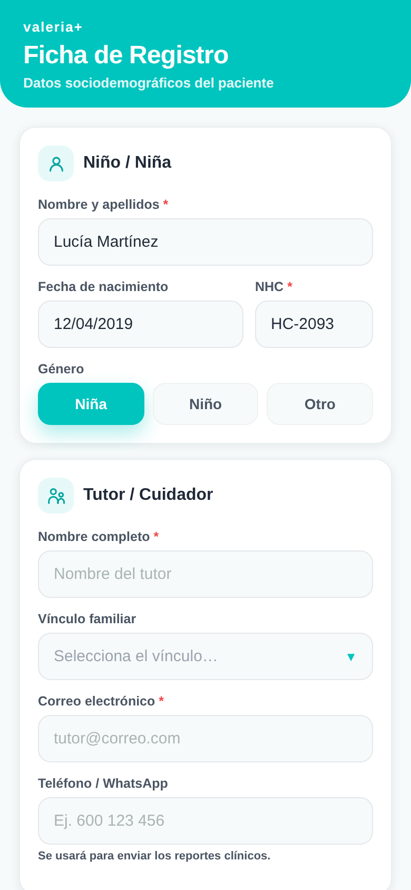
Fig. 4 · Ficha de Registro: datos del niño/a (nombre, fecha, NHC y género).
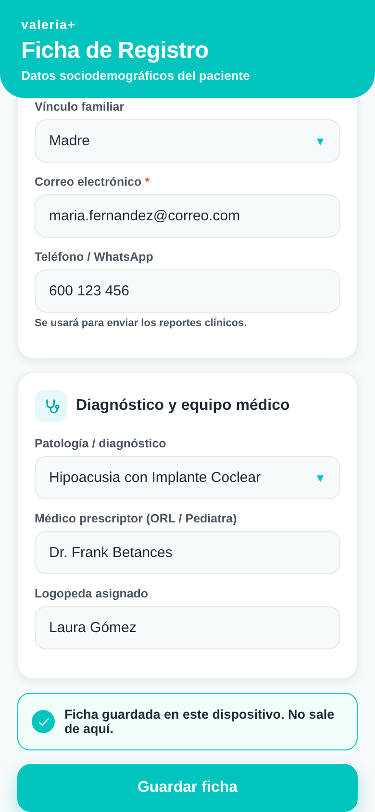
Fig. 5 · Ficha guardada y cifrada; aparece “Continuar a Prescripción →”.
CU‑02 · Profesional / Familia
Elegir un bloque de terapia (hub de bloques)
Actor
Logopeda o tutor
Pantalla
Prescripción de Terapias (hub)
Precondición
Ficha del paciente activa
Resultado
Bloque de terapia abierto para practicar o prescribir
El hub es el centro de mando de cada sesión. Muestra la racha 🔥 y el nivel 🏅 del paciente
y presenta los seis bloques como tarjetas. Audición, Lenguaje, TEA y Dislexia indican además cuántas terapias hay activas.
Flujo principal
Tocar la tarjeta del bloque deseado: Pares Mínimos (CU‑04), Expansión Semántica (CU‑05), Audición, Lenguaje, TEA o Dislexia (CU‑06 / CU‑09).
Antes de la primera sesión, abrir la tarjeta destacada “Academy” para formarse como cuidador (ver CU‑03): en la terapia auditivo‑verbal el adulto dirige la sesión, así que conviene empezar por ahí.
Desde la misma pantalla se activan los recordatorios de sesión (ver CU‑10).
Empieza por Academy
La tarjeta Academy (CU‑03) comparte jerarquía visual con los bloques de terapia y no depende de nada previo: es el primer paso recomendado para que el adulto acompañe con criterio.
Dónde practica cada quién
En Modo Familia todos los bloques son accesibles para practicar lo prescrito; solo el logopeda, con el PIN, cambia qué está activo en cada uno.
CU‑03 · Familia
Academy: formarse con las Cápsulas de Conocimiento
Actor
Adulto que dirige la sesión (familia o cuidador)
Pantalla
Prescripción de Terapias → Academy (hub de dominios)
Precondición
Ninguna; disponible desde el primer día
Resultado
Cápsula completada y progreso guardado en su dominio
Academy es el espacio de formación para el adulto. En la terapia
auditivo‑verbal la persona que acompaña al niño es el motor de la sesión, así que Academy
le enseña —en pequeñas dosis— a hacerlo mejor. Desde la v9 no es un curso único: se organiza en
cinco dominios de formación, cada uno con su propia lista de cápsulas, su
escala de niveles (de Novato a “Experto en…”) y sus insignias. Un
feed de prioridad destaca arriba el dominio que corresponde a la patología de la ficha
del paciente, para que el cuidador empiece por lo que más le sirve.
Dominio
Qué se aprende
💬 Lenguaje
Cómo aprenden a hablar los niños (el baño de lenguaje y la conversación por turnos), el porqué del movimiento (TPR) y los vicios a evitar: remodelar en vez de corregir y comentar más que preguntar.
👂 Hipoacusia / Sordera
Qué es la sordera y su abordaje, más micro‑guías de hardware para el manejo y cuidado del audífono, el implante coclear y los dispositivos osteointegrados.
🗣️ Dislalias
Puntos de articulación de cada sonido, a qué edad se espera cada uno y cómo practicar en casa los sonidos difíciles (la erre, las praxias de la boca).
🔤 Dislexia
Conciencia fonológica y apoyo a la lectura emergente: cómo suena y se segmenta cada palabra antes de leerla.
🧩 TEA
Comunicación, anticipación y regulación en el espectro autista: cómo sostener la atención conjunta y reparar la comunicación sin presión.
Flujo principal
En Prescripción de Terapias, pulsar la tarjeta “Academy” (bajo el rótulo “Tu formación”).
El feed de prioridad propone el dominio que encaja con la patología de la ficha; también se puede elegir cualquier otro dominio del hub.
Elegir una Cápsula de Conocimiento de la lista del dominio (unos 2 minutos cada una) —o, en Hipoacusia, una micro‑guía de hardware.
Leer las diapositivas avanzando con “Siguiente” y responder el quiz rápido del final; cada respuesta muestra una breve explicación.
Al aprobar, la app suma puntos e insignias en ese dominio y su barra de progreso avanza al instante, sin re‑dibujar el resto del hub.
Es para el adulto, no para el niño
Academy vive junto a los menús de la app, que maneja siempre el adulto; la tableta se cede al niño solo cuando el ejercicio ya ha empezado. Por eso el niño no llega por error a esta formación.
El progreso no se pierde
El avance (cápsulas hechas, nivel e insignias) se guarda cifrado en el dispositivo, igual que el resto de datos, y funciona sin conexión.
CU‑04 · Familia
Pares Mínimos para dislalias
Actor
Tutor + niño/a (en pareja)
Pantalla
Pares Mínimos · Dislalias
Precondición
Par prescrito por el logopeda
Resultado
Sesión de 10 ensayos valorada + evolución del fonema
Bloque para dislalias fonológicas. Se muestran dos fichas casi iguales (por ejemplo
rana / lana); la app pide una en voz alta y el niño la dice al micrófono. Con reconocimiento de
voz, la app detecta si salió el fonema o la sustitución habitual; sin micrófono, el padre hace de juez.
Una barra de fase de turno (Escucha → Repite → Veredicto → Misión) muestra en todo momento en qué
paso va el ensayo.
Flujo principal
En el banco de contrastes, elegir un par prescrito (15 disponibles en 6 grupos: rotacismo, sigmatismo, velares, labiodental, nasales y laterales). Pulsar ▶.
La app pide una ficha en voz alta (“¡Dile a papá cuál quieres! Di: rana”). El niño la dice. La fase de turno avanza de Escucha a Repite.
La app evalúa: acierto (3★ al primer intento, 2★ tras corrección), sustitución detectada (corrección específica del par) o aproximación (reintento).
Cada acierto trae una misión física (“¡Salto de rana!”) y termina con el sello doble: padre e hijo pulsan dos huellas a la vez para continuar.
A lo largo de los 10 ensayos hay rotación de roles (“¡Ahora mandas tú!”) y una cápsula TPR de movimiento. Al final se guarda la sesión y la evolución del fonema.
Flujos alternativos
El padre es el juez final: si la app oyó mal, corrige el veredicto con “dijo rana / dijo lana”.
Dos correcciones seguidas: la app pasa a imitación asistida (1★) para no frustrar; nunca hay un tercer fallo seguido.
Sin reconocimiento de voz (Expo Go / navegador): el padre valora con los botones “Dijo …”.
Anti‑pasividad
Nada avanza sin las manos de los dos: el sello doble obliga a que el adulto participe en cada ensayo. La rotación de roles convierte al niño en “juez” que discrimina qué palabra dijo el adulto.
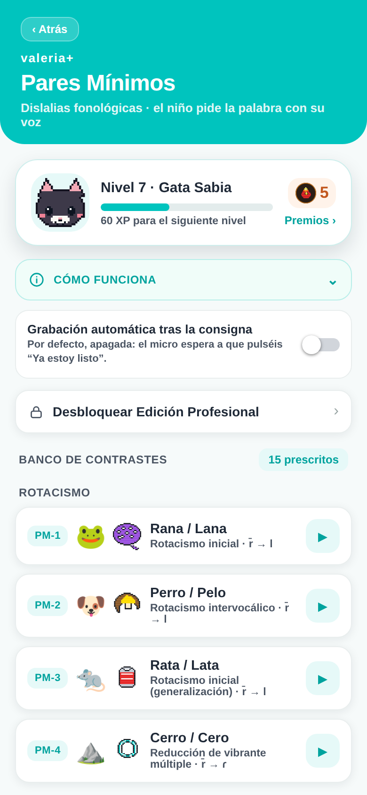
Fig. 6 · Banco de contrastes: los pares agrupados por tipo de error.
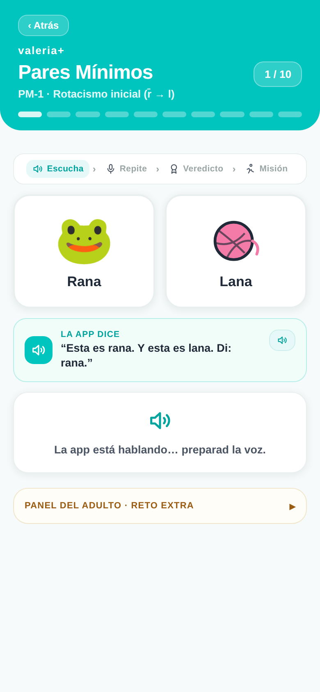
Fig. 7 · Ensayo: dos fichas, la consigna y el juez del padre.
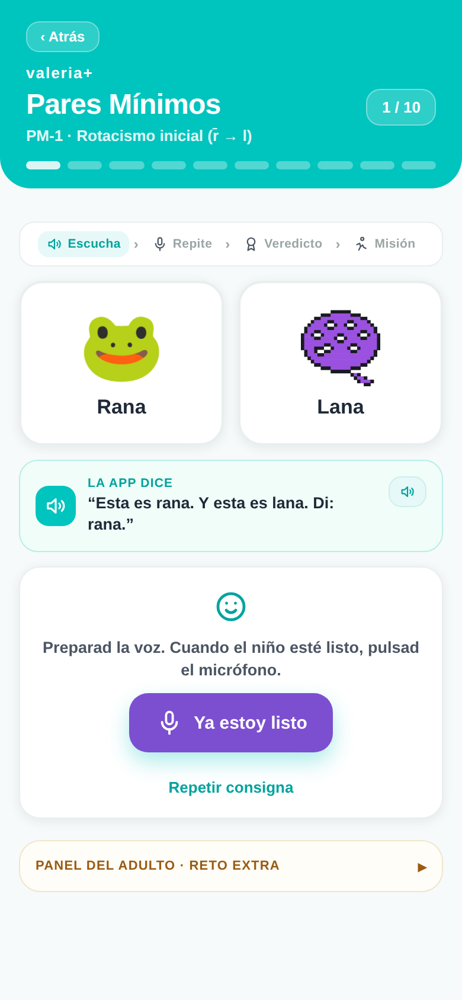
Fig. 8 · Acierto: misión física de celebración y sello doble.
CU‑05 · Familia
Expansión Semántica / progresión léxica
Actor
Tutor + niño/a
Pantalla
Expansión Semántica · Progresión Léxica
Precondición
Actividad prescrita por el logopeda
Resultado
Palabras trabajadas uniendo símbolo, voz y cuerpo
Rehabilitación léxica offline para intervención temprana. Cada palabra une imagen, voz y una
acción física del adulto que la ancla al mundo real del niño. Tres modos de práctica en pestañas:
Modo
Qué contiene
Escenarios
5 rutinas diarias (mañana, comida, parque…), 6 palabras cada una.
Progresión
9 secuencias que suben Onomatopeya → Sustantivo → Verbo → Adjetivo (el coche, el perro, la vaca, el gato, la lluvia, el tren, el pájaro, el pan, el globo…). «El desayuno» da el salto a la combinación de dos palabras («quiero pan»).
Como en Pares Mínimos, una barra de fase de turno (Escucha → Repite → Veredicto → Misión) guía cada paso.
Flujo principal
Elegir la pestaña (Escenarios, Progresión o Contrastes) y pulsar ▶ en una actividad prescrita.
La app enseña la imagen y dice la palabra (“Esto es la cama… Di: cama”). El niño la repite.
El micrófono valora el intento aceptando las aproximaciones propias de la edad; sin micrófono, el adulto decide (“Lo dijo / Casi”).
Cada palabra se cierra con la acción física del adulto (“Da unas palmaditas en la cama y sentaos en ella”). Se avanza al siguiente paso.
Por qué funciona
La palabra se aprende cuando el niño la vive con el cuerpo, no solo cuando la oye. Las cápsulas de contraste añaden una “segunda vuelta” con la palabra opuesta para consolidar el par.
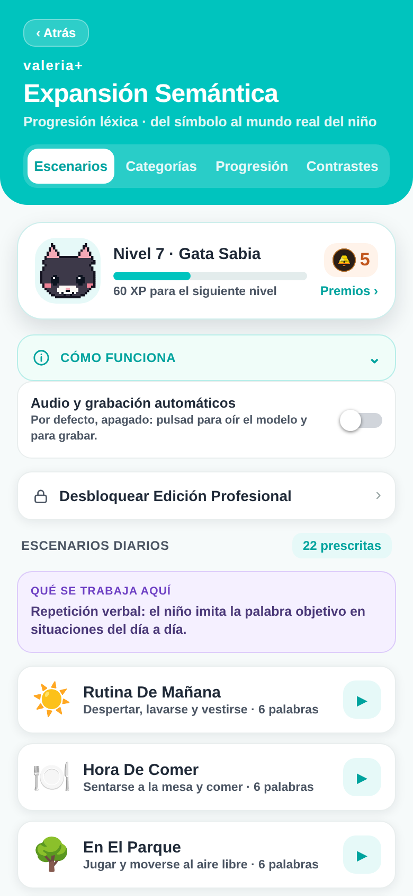
Fig. 9 · Escenarios diarios: mañana, comida y parque.
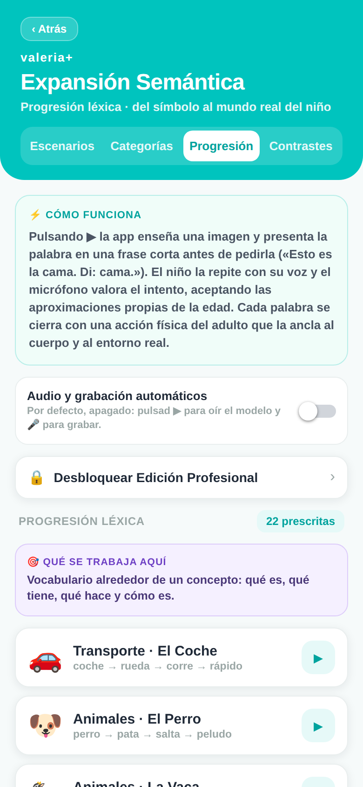
Fig. 10 · Progresión léxica: de onomatopeya a adjetivo.
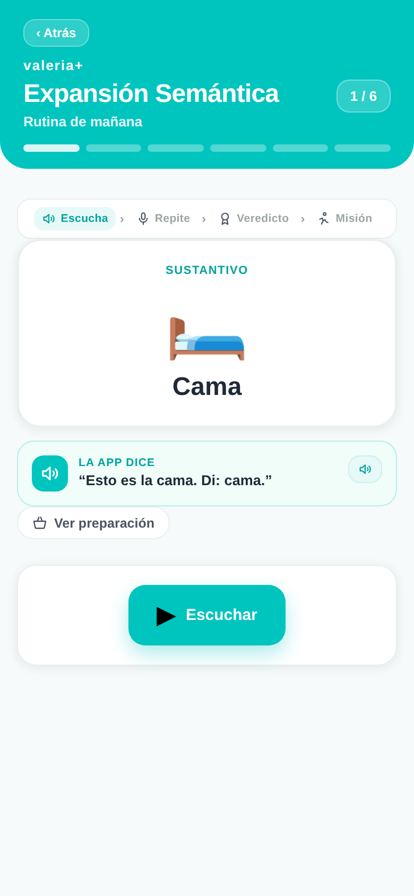
Fig. 11 · Paso: imagen, consigna y misión física del adulto.
CU‑06 · Profesional
Prescribir terapias (Audición, Lenguaje, TEA y Dislexia · Modo Profesional)
Actor
Logopeda
Pantalla
Hub → Audición / Lenguaje / TEA / Dislexia
Precondición
Ficha creada · PIN disponible
Resultado
Selección de terapias guardada en el dispositivo
Flujo principal
En el hub, abrir Audición (18 terapias), Lenguaje (7), TEA (6) o Dislexia (6).
Pulsar “Desbloquear Edición Profesional” e introducir el PIN (demo: 1985).
Activar o desactivar cada terapia con su interruptor. El contador “N prescritos” se actualiza al momento.
Pulsar “Guardar Prescripción”. La selección se guarda y la edición vuelve a bloquearse.
Flujos alternativos
PIN incorrecto: los puntos se marcan en rojo y se pueden reintroducir.
Solo consulta (sin PIN): se ve la lista, pero los interruptores están atenuados.
Practicar sin editar: el botón ▶ de cada fila inicia esa terapia, incluso en Modo Familia. El mismo PIN prescribe en los seis bloques (Pares Mínimos, Expansión Semántica, Audición, Lenguaje, TEA y Dislexia).
Consentimiento del módulo TEA: el Quiebre Pragmático Inducido (TEA‑2) exige aceptar antes un encuadre de consentimiento informado; hasta entonces queda bloqueado.
Estresores siempre manuales
En TEA y Dislexia, el ruido, la latencia y la persecución los aplica el adulto a mano; la app nunca ajusta la dificultad ni cronometra sola (muro MDR).
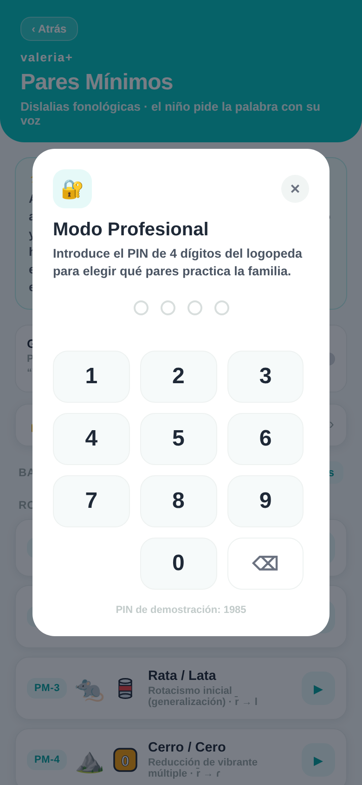
Fig. 12 · Teclado de PIN compartido por todos los bloques.
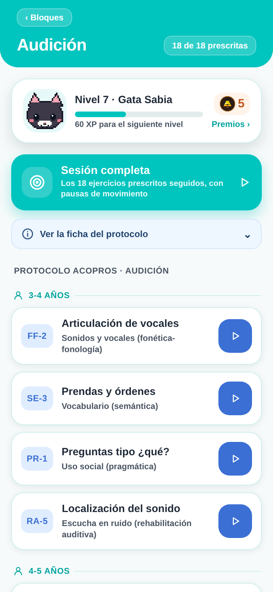
Fig. 13 · Audición: las 18 terapias con su interruptor de prescripción.
CU‑07 · Familia
Retomar un paciente e iniciar una sesión
Actor
Tutor o cuidador
Pantalla
Bienvenida → Selección de paciente → Hub
Precondición
Existe al menos una ficha guardada
Resultado
Paciente activo cargado y listo para practicar
Flujo principal
En Bienvenida, pulsar el botón “Ya tengo un paciente registrado” (desde la v8.1, un botón de tamaño completo bajo “Comenzar”).
Seleccionar la ficha del niño/a en la lista de pacientes del dispositivo.
La app carga su prescripción y su progreso (racha, nivel) y abre el hub de bloques.
Elegir un bloque para practicar (CU‑02).
No hay pacientes guardados: use CU‑01 para dar de alta uno nuevo desde “Comenzar”.
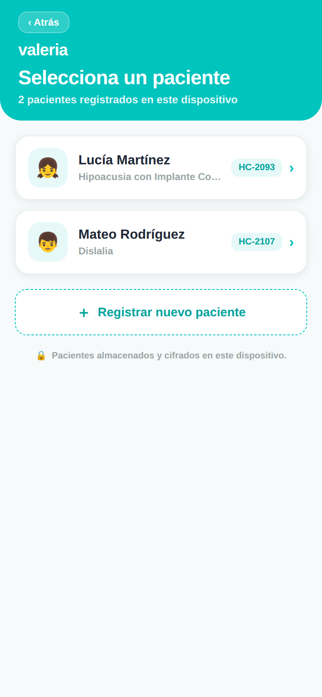
Fig. 14 · Selección de paciente: fichas guardadas en el dispositivo.
CU‑08 · Familia
Test de Ling previo (audífono / implante)
Actor
Tutor que produce los sonidos
Pantalla
Test de Ling
Precondición
Patología con audífono o implante coclear
Resultado
Comprobación auditiva registrada + recomendación
Flujo principal
Al pulsar ▶ en una terapia de Audición, responder: ¿el niño usa audífonos o implante? Si es No, se salta a los ejercicios. La cabecera muestra el nombre del paciente activo tomado de su ficha (v8.1).
Si es Sí, para cada uno de los 6 sonidos (m, u, a, i, sh, s) el adulto lo produce tapándose la boca.
Marcar la respuesta del niño: Identifica · Detecta · Sin respuesta.
Al terminar, la app muestra el resultado y una recomendación. Pulsar “Comenzar ejercicios”.
Por qué estos 6 sonidos
Cubren el rango del habla, de graves (~250 Hz) a muy agudos (~5 kHz). El sonido “s” es el más difícil de oír; si se detecta, el equipo funciona bien en frecuencias altas.
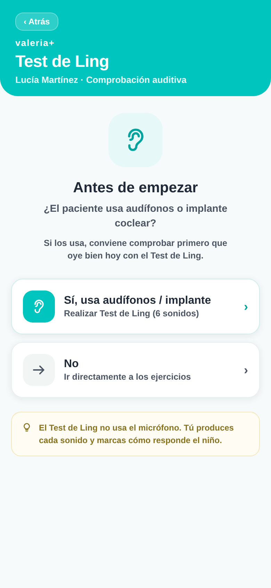
Fig. 15 · Pregunta previa: ¿usa audífonos o implante coclear?
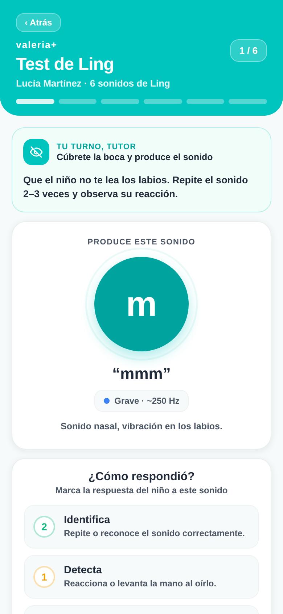
Fig. 16 · Sonido en curso: el tutor lo produce y marca la respuesta.
CU‑09 · Familia
Realizar una sesión de ejercicios (Audición / Lenguaje)
Actor
Tutor + niño/a
Pantalla
Reproductor de Ejercicios → Resultados
Precondición
Terapia iniciada (con o sin Test de Ling)
Resultado
Sesión valorada y guardada en el historial
Flujo principal
Cada mini‑juego sigue un flujo numerado PASO 1→4: consigna → juego → movimiento → evaluación. La app presenta fichas ilustradas grandes; toque cualquier imagen para ampliarla a pantalla completa.
Con “🔄 Otra ronda” el ejercicio rota su contenido (hasta 3 variantes: vocales, palabra articulada, vocal faltante, intruso, adivinanzas, plurales, frases S‑V‑O, emociones…), para que el niño no memorice siempre el mismo ítem.
El adulto guía la actividad y valora la respuesta con la escala EPT‑3: ★ emergente, ★★ en proceso, ★★★ consolidado.
Cada ejercicio ofrece una “versión en movimiento”; entre ejercicios aparecen pausas activas. Los de Lenguaje añaden voz (TTS), juego del micrófono y cápsulas TPR.
Al terminar se calcula la media y se muestran las recompensas (XP, racha, nivel, insignias). Ver CU‑11.
Flujos alternativos
Sesión completa: el botón “🎯 Sesión completa” de cada bloque encadena todos los ejercicios prescritos en una sola tanda (pasando por el Test de Ling si la ficha lo indica), en vez de lanzarlos de uno en uno.
Sesión perfecta: si todos los ejercicios obtienen ★★★, se desbloquea la insignia “Sesión estrella”.
Salir a mitad: se puede volver atrás; lo valorado hasta ese punto no cuenta como sesión completada.
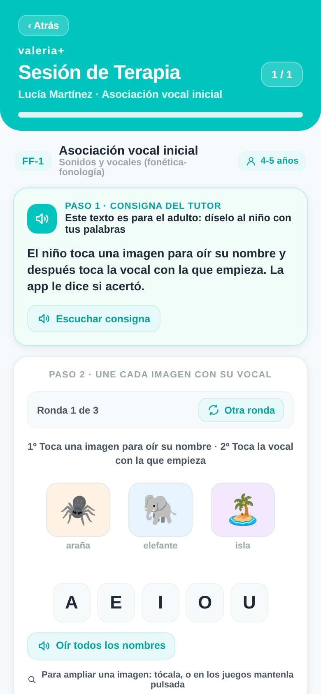
Fig. 17 · Ficha ilustrada: consigna, imágenes ampliables y versión en movimiento.
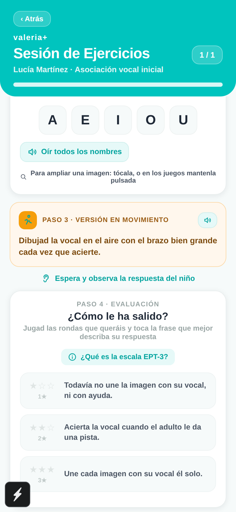
Fig. 18 · Evaluación EPT‑3: el adulto toca 1★, 2★ o 3★.
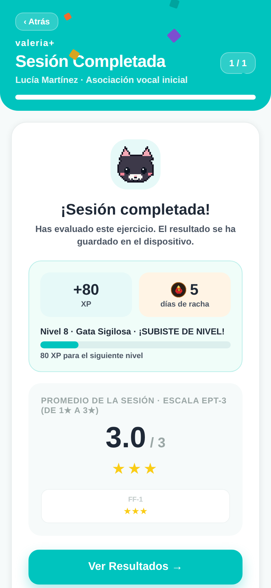
Fig. 19 · Fin de sesión: XP, racha, nivel y promedio EPT‑3.
CU‑10 · Familia
Configurar recordatorios diarios
Actor
Tutor o logopeda
Pantalla
Hub → “Recordatorios de sesión”
Precondición
Permiso de notificaciones del sistema
Resultado
Avisos en la pantalla de bloqueo
Flujo principal
En la tarjeta “Recordatorios de sesión” del hub, activar el interruptor.
Conceder el permiso de notificaciones si el sistema lo pide.
La app programa hasta 4 avisos al día —a las 9:00, 13:00, 17:00 y 20:00— con un consejo para padres que rota a diario.
Permiso denegado: aparece un aviso pidiendo conceder el permiso en los ajustes del sistema.
Desactivar: el mismo interruptor cancela todos los recordatorios.
CU‑11 · Familia
Motivación: racha, niveles e insignias
Actor
Niño/a (con apoyo del adulto)
Pantalla
Fin de sesión · cabecera del hub
Precondición
Al menos una sesión completada
Resultado
XP, racha y niveles actualizados
Al estilo de apps como Duolingo, Valeria+ recompensa la constancia en todos los bloques. Todo se guarda localmente.
Cómo se gana XP · Niveles · Insignias
XP por sesión: base (20 + 5 por ejercicio) + precisión (hasta +30) + racha (hasta +14) + sesión perfecta (+15).
Niveles (cada 100 XP): Osezno → Oso Curioso → Oso Valiente → Oso Explorador → Oso Sabio → Gran Oso → Oso Legendario.
La racha se mantiene mientras se practique hoy o ayer. Si se salta más de un día, vuelve a cero: por eso ayudan los recordatorios de CU‑10.
CU‑12 · Profesional / Familia
Consultar el panel de resultados
Actor
Logopeda o tutor
Pantalla
Resultados del paciente
Precondición
Historial de sesiones registrado
Resultado
Visión de la evolución del paciente
Flujo principal
Abrir el panel de resultados al finalizar una sesión o desde la ficha. La cabecera muestra el nombre y NHC del paciente activo, tomados de su ficha de registro (v8.1).
Revisar la evolución por estrellas (media de las últimas sesiones) y, para dislalias, la nueva
gráfica de sustitución por fonema: el % de ensayos con la sustitución detectada por el micrófono, donde bajar es mejorar.
Consultar el estado de gamificación (XP, racha, nivel) y la adherencia semanal.
El logopeda usa estos datos para ajustar la prescripción (volver a CU‑06) en la siguiente revisión.
Ciclo de mejora
Resultados → decisión clínica → nueva prescripción → nuevas sesiones. La gráfica de fonema convierte la práctica de pares mínimos en un indicador clínico objetivo entre sesiones.
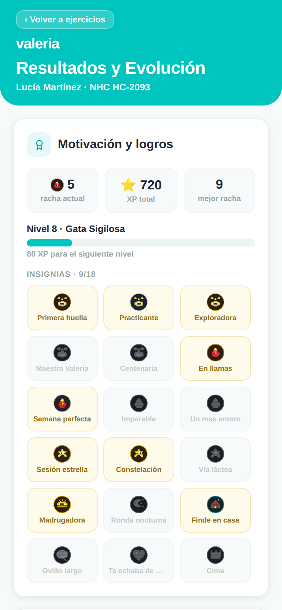
Fig. 20 · Panel: motivación, insignias y adherencia semanal.
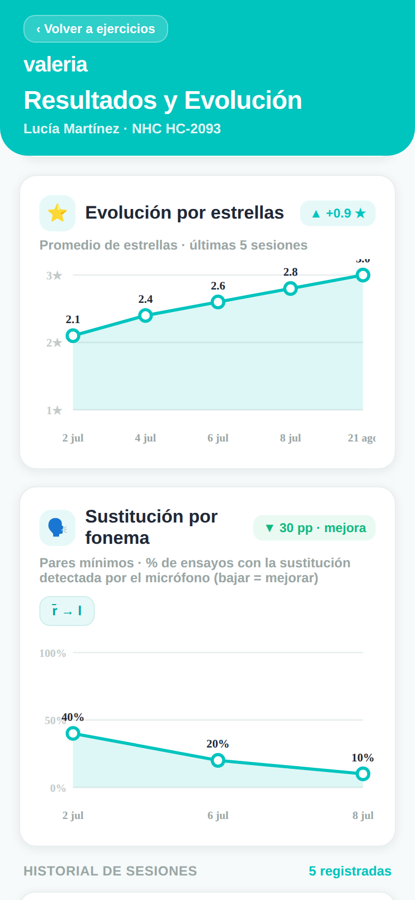
Fig. 21 · Evolución por estrellas y sustitución por fonema (bajar = mejorar).
CU‑13 · Profesional
Cambiar entre Modo Familia y Modo Profesional
Actor
Logopeda
Pantalla
Cualquier bloque prescribible
Precondición
Conocer el PIN
Resultado
Edición habilitada o bloqueada según convenga
Flujo principal
Para entrar en Modo Profesional: pulsar “Desbloquear Edición Profesional” 🔒 e introducir el PIN. El estado pasa a 🔓 “Modo profesional activo”.
Realizar los cambios de prescripción necesarios en el bloque (Pares Mínimos, Expansión Semántica, Audición, Lenguaje, TEA o Dislexia).
Para salir: pulsar “Guardar Prescripción”. La edición se bloquea automáticamente y vuelve a Modo Familia.
Buena práctica
Guarde siempre antes de entregar el dispositivo a la familia, para que la prescripción quede protegida en modo solo lectura. El PIN es el mismo en todos los bloques.
CU‑14 · Profesional
Exportar la evidencia de usabilidad del piloto (QR + compartir)
Actor
Logopeda / responsable del piloto
Pantalla
Hub de bloques → “Acceso Profesional”
Precondición
Se han usado ejercicios · PIN disponible
Resultado
Resumen en QR + registro completo compartido; datos purgados
Durante el piloto, la app va guardando de forma anónima y sin molestar unas métricas de
usabilidad (tiempo por pantalla, misclicks y cápsulas de movimiento saltadas) junto con la encuesta breve de
satisfacción. Este caso de uso explica cómo el profesional las saca del dispositivo para el
análisis, con dos salidas a la vez: una offline (QR) y otra online (compartir).
Flujo principal
En el hub de bloques, bajar hasta la tarjeta “Acceso Profesional” y tocarla.
Introducir el PIN del logopeda (demo: 1985).
Se abre la pantalla de exportación: en el acto aparece un código QR con el resumen
(nº de sesiones, % de abandono TPR, misclicks y media de la encuesta) y, a la vez, el menú de compartir
del sistema para enviar el registro completo por email o WhatsApp.
Offline: escanear el QR con otro móvil para capturar el resumen sin necesidad de conexión.
Online: elegir la app de destino (correo, WhatsApp…) para enviar el registro completo en crudo.
Tras un envío correcto, la app vacía el archivo del dispositivo y lo confirma (“Log exportado y purgado”).
Flujos alternativos
Se cancela el compartir: el registro no se borra; el QR sigue visible y se puede reintentar.
Sin conexión: use solo el QR; el envío por compartir queda para cuando haya red.
Resumen muy largo para el QR: la app avisa y basta con usar el compartir del registro completo.
Qué contiene cada salida
El QR lleva solo el resumen estadístico comprimido (sin datos personales). El compartir envía el registro completo de la telemetría anónima y la encuesta, correlacionados por identificador de sesión, para el análisis del piloto.
Encuesta de satisfacción (SUS)
La pregunta de 1 a 5 (“Fue fácil integrar este ejercicio en la rutina de mi hijo/a”) aparece sola al completar 4 bloques distintos y como mucho una vez por semana por dispositivo. La familia no tiene que buscarla ni configurarla.
CU‑15 · Profesional / Familia
Elegir la variedad de terapia (Castellano · Galego · Dominicano · Euskera)
Actor
Logopeda o tutor
Pantalla
Tarjeta “Voz de la app”
Precondición
App abierta (funciona sin conexión)
Resultado
El contenido se locuta y evalúa en la variedad elegida
Valeria+ puede trabajar el contenido terapéutico en cuatro variedades. La interfaz
(menús y botones) sigue en castellano; lo que cambia es lo que se dice, se muestra y se evalúa.
La elección se guarda en el dispositivo y se aplica a todos los bloques.
Variedad
Cómo suena y evalúa
🇪🇸 Castellano
Voz neuronal Sharvard pregenerada (offline) y reconocimiento del sistema en español de España.
Galego(Proxecto Nós)
Voz neuronal Celtia pregenerada en gallego; contenido y pares propios. El contenido compartido con el castellano (Expansión Semántica, Audición y Lenguaje) suena con la voz neuronal castellana mientras Celtia no lo cubra (v8.1).
🇩🇴 Dominicano(Quisqueya Habla)
Usa la voz latina del dispositivo y el micrófono en es‑DO; respeta los rasgos del habla caribeña.
Euskera(batua · ILENIA/NEL‑GAITU)
Voz neuronal HiTZ‑TTS pregenerada (UPV/EHU · Aholab), empaquetada y offline. El reconocimiento usa eu‑ES donde el dispositivo lo trae; si no, recae en es‑ES con un pliegue de la ⟨h⟩ muda que no penaliza las sibilantes ni africadas (contraste clínico que valora el adulto).
Flujo principal
Abrir la tarjeta “Voz de la app” y localizar “Variedad de la voz”.
Tocar Castellano, Galego, Dominicano o Euskera.
La app cambia al instante la locución y el reconocimiento; la tarjeta muestra un aviso sobre la voz disponible.
Flujos alternativos
En dominicano suena peninsular o robótica: instalar una voz de “Español (Latinoamérica)” en los ajustes del dispositivo; la app la usará automáticamente.
En euskera sin reconocedor vasco: el dispositivo escucha en es‑ES con el pliegue de la ⟨h⟩; si tampoco hay micrófono (Expo Go / web), el adulto valora con botones, como en el resto de variedades.
Falta la voz pregenerada de una locución: en galego se reproduce primero el asset neuronal castellano equivalente si existe (v8.1); en último término, la app recae con suavidad en la voz del sistema, sin interrumpir la sesión.
Respeto dialectal
En dominicano, la app no marca como error el seseo, la aspiración de la “s” ni el cambio de “r/l” a final de sílaba: son rasgos normales del habla, no fallos que corregir.
Fig. 22 · Tarjeta “Voz de la app”: selector de variedad Castellano · Galego · Dominicano · Euskera.
CU‑16 · Profesional
Panel del Adulto: carga comunicativa (ruido, doble tarea, quiebre)
Actor
Adulto que dirige la sesión (logopeda o tutor)
Pantalla
Reproductor de Ejercicios → Panel del Adulto
Precondición
Ejercicio de Audición/Lenguaje en curso
Resultado
Reto de carga aplicado a mano y registrado
Para el piloto clínico, el Panel del Adulto (tarjeta plegable dentro del
ejercicio) añade tres módulos de carga comunicativa. Todos son manuales: la app
nunca los activa, mide ni ajusta por su cuenta; es el adulto quien decide cuándo y cuánto.
Módulo
Qué hace
🔊 Escucha en ruido
Un slider añade ruido de fondo (bullicio de cafetería) por debajo de la instrucción. El volumen sube o baja solo con el dedo del adulto.
🐻 Doble tarea
Un oso distractor se asoma y se mueve por el borde de la pantalla sin ser tocable: obliga al niño a atender a la voz pese a la interferencia visual.
💬 Quiebre pragmático
La app calla y el adulto rompe la comunicación a propósito; luego marca la estrategia de reparación que usó el niño.
Flujo principal
Durante el ejercicio, desplegar la tarjeta “Panel del Adulto”.
Activar el módulo deseado: mover el slider de ruido, encender el oso distractor o lanzar el quiebre pragmático.
Guiar la respuesta del niño y, en el quiebre, seleccionar la estrategia de reparación observada.
Desactivar el módulo cuando convenga; el nivel de reto queda registrado de forma anónima.
Antes del quiebre pragmático
Un aviso recuerda que la tarea genera “frustración útil” y se puede cancelar. Explicarlo evita que la familia lo viva como un fallo de la app.
Siempre en manos del adulto
Ningún módulo se activa solo. Esta regla es deliberada: mantiene la app como herramienta de apoyo a la terapia, no como un aparato de medición automática.
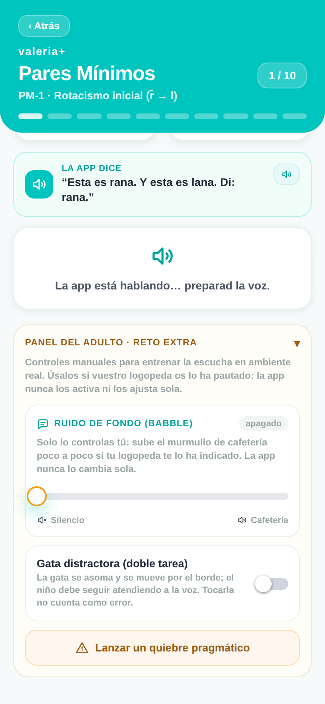
Fig. 23 · Panel del Adulto desplegado: ruido de fondo, oso distractor y quiebre pragmático.
Anexo A
Preguntas frecuentes y resolución de problemas
Situación
Qué hacer
No recuerdo el PIN profesional
El PIN lo define el logopeda. En la demo es 1985 y es el mismo en todos los bloques. Si se olvida en producción, debe restablecerse desde la configuración de la app.
El micrófono no reconoce la voz
En Expo Go y en el navegador web no hay reconocimiento de voz: use el modo juez (el adulto valora con botones). En la app instalada, revise el permiso de micrófono.
La app oyó mal en Pares Mínimos
El padre es el juez final: use “dijo rana / dijo lana” para corregir el veredicto. Un falso positivo no penaliza al niño.
No avanza tras la misión física
Es el sello doble: padre e hijo deben pulsar las dos huellas a la vez. Con una sola mano, mantenga pulsada una huella 2 segundos.
No aparece el Test de Ling
Solo se muestra en los ejercicios de Audición si la patología indica audífono o implante coclear (CU‑08).
La racha volvió a cero
Se perdió porque pasó más de un día sin practicar. Active los recordatorios (CU‑10) para evitarlo.
No puedo cambiar qué se practica
Está en Modo Familia (solo lectura). Desbloquee el Modo Profesional con el PIN (CU‑06 / CU‑13).
¿Se pierden los datos al cerrar la app?
No. Ficha, prescripción, historial, evolución por fonema y progreso se guardan cifrados en el dispositivo.
El mismo ejercicio se repetía siempre igual
Use “🔄 Otra ronda”: cada mini‑juego rota hasta 3 contenidos distintos. Para practicar todo lo prescrito de golpe, use “🎯 Sesión completa”.
¿Necesito conexión o crear una cuenta?
No. La app funciona en local sin conexión. El acceso profesional con correo y contraseña (sincronización en la nube) es opcional y solo se usa para pruebas con profesionales (v6).
¿Qué datos recoge el piloto sobre mi hijo/a?
Solo métricas anónimas de usabilidad (tiempo por pantalla, misclicks y cápsulas saltadas) y una encuesta breve. No se guardan nombres, ni audio, ni el contenido de las respuestas. Todo se cifra en el dispositivo (v7).
¿Por qué apareció una encuesta con caritas?
Es la encuesta de satisfacción del piloto (SUS). Solo aparece al completar 4 bloques distintos y como mucho una vez por semana. Se puede cerrar sin responder.
¿Cómo exporto los datos del piloto?
Desde el hub, tarjeta “Acceso Profesional” con el PIN: la app muestra un QR con el resumen y abre el compartir con el registro completo. Tras enviarlo, los datos se purgan (CU‑14).
¿Puedo usar la app en gallego, dominicano o euskera?
Sí. En la tarjeta “Voz de la app” se elige la variedad (Castellano, Galego, Dominicano o Euskera). Cambia lo que se locuta y evalúa; los menús siguen en castellano (CU‑15).
En dominicano la voz suena de España o robótica
Instale una voz de “Español (Latinoamérica)” en los ajustes del dispositivo. La app la detecta y la usa automáticamente (v8).
En galego, algunos ejercicios no hablaban
Corregido en la v8.1: la Expansión Semántica y los ejercicios de Audición y Lenguaje suenan ahora con la voz neuronal castellana mientras Celtia no cubra ese contenido. Actualice la app si sigue ocurriendo.
Marca como error algo que en mi país se dice así
En la variedad dominicana la app respeta los rasgos del habla caribeña (seseo, “s” aspirada, “r/l” final). Y recuerde: el adulto es siempre el juez final del veredicto.
Apareció ruido de fondo o un oso moviéndose
Son módulos del Panel del Adulto (carga comunicativa) del piloto; solo se activan a mano. Desactívelos desde ese mismo panel (CU‑16).
Aparecieron bloques nuevos: TEA y Dislexia
Son los dos bloques que suma la v9. TEA (6 terapias, protocolo PRT + TCC) y Dislexia (6 terapias de conciencia fonológica y acceso léxico). Se prescriben con el mismo PIN que el resto y sus estresores los activa siempre el adulto (CU‑06).
¿Qué es la tarjeta “Academy” del hub?
Es la formación para el adulto, organizada en cinco dominios (Lenguaje, Hipoacusia, Dislalias, Dislexia y TEA). Cápsulas breves con quiz sobre cómo aprenden a hablar los niños, el manejo de los dispositivos auditivos, los sonidos difíciles y más; un feed destaca el dominio que encaja con la patología de la ficha. No es un ejercicio para el niño (CU‑03).